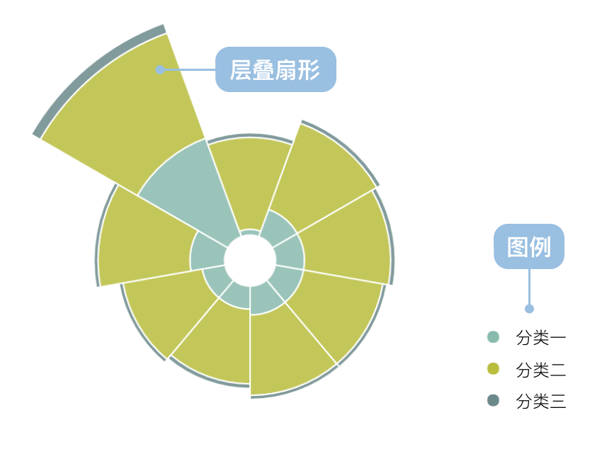

南丁格尔玫瑰图
南丁格尔玫瑰图的简介

南丁格尔玫瑰图又名鸡冠花图、极坐标区域图，是南丁格尔在克里米亚战争期间提交的一份关于士兵死伤的报告时发明的一种图表。
南丁格尔玫瑰图是在极坐标下绘制的柱状图，使用圆弧的半径长短表示数据的大小（数量的多少）。由于半径和面积的关系是平方的关系，南丁格尔玫瑰图会将数据的比例大小夸大，尤其对于最外部的部分来说。
注意：由于圆形有周期的特性，所以玫瑰图适用于表示一个周期内的时间概念，比如星期、月份。
英文名： Nightingale Rose Chart, Coxcomb Chart, Polar Area Diagram
南丁格尔玫瑰图的构成

| 图表类型 | 南丁格尔玫瑰图 |
|---|---|
| 适合的数据 | 一个分类字段数据，一个连续字段数据 |
| 功能 | 对比分类数据的数值大小 |
| 数据与图形的映射 | 分类数据字段映射到弧度
连续数据字段映射到扇形半径长度 |
| 适合的数据条数 | 不超过30条分类数据 |

| 图表类型 | 层叠的玫瑰图 |
|---|---|
| 适合的数据 | 两个分类字段数据，一个连续字段数据 |
| 功能 | 对比分类数据的数值大小，同时对比一个分类（分组）下数据的汇总值 |
| 数据与图形的映射 |
其中一个分类数据字段映射到弧度， 另一个分类数据映射到图形的颜色用于分组 连续数据字段映射到扇形半径长度 |
| 适合的数据条数 | 不超过30*N条分类数据(N是分组数) |
南丁格尔玫瑰图的应用场景
适合的场景
例子1：一般的玫瑰图。下图是各国制造指数的对比，以美国为基准（100），中国的制造成本指数是96，也就是说，同样一件产品，在美国制造成本是1美元，那么在中国则需要0.96美元，从下图可以看出中国的制造优势已经不明显。
| country（国家) | cost（制造指数） |
|---|---|
| 中国 | 96 |
| 德国 | 121 |
| 美国 | 100 |
| 日本 | 111 |
| 韩国 | 102 |
| .... | .... |
var data = [
{country:'中国',cost:96},
{country:'德国',cost:121},
{country:'美国',cost:100},
{country:'日本',cost:111},
{country:'韩国',cost:102},
{country:'法国',cost:124},
{country:'意大利',cost:123},
{country:'荷兰',cost:111},
{country:'比利时',cost:123},
{country:'英国',cost:109},
{country:'加拿大',cost:115},
{country:'俄罗斯',cost:99},
{country:'墨西哥',cost:91},
{country:'印度',cost:87},
{country:'瑞士',cost:125},
{country:'澳大利亚',cost:130},
{country:'西班牙',cost:109},
{country:'巴西',cost:123},
{country:'泰国',cost:91},
{country:'印尼',cost:83},
{country:'波兰',cost:101},
{country:'瑞典',cost:116},
{country:'奥地利',cost:111},
{country:'捷克',cost:107},
];
var Stat = G2.Stat;
var chart = new G2.Chart({
id: 'c3',
width : 600,
height : 500,
plotCfg: {
margin: 50
}
});
var defs = {
'cost': {min: 0}
};
chart.source(data,defs);
chart.coord('polar');
chart.axis('cost',{
labels: null
});
chart.axis('country',{
gridAlign: 'middle'
});
chart.legend('country',false);
chart.interval().position('country*cost')
.color('country','rgb(252,143,72)-rgb(255,215,135)')
.label('cost',{offset: -15,label: {'text-anchor': 'middle',fontStyle:'bold'}})
.shape('stroke');
chart.render();
需要注意： 南丁格尔玫瑰图会夸大不同分类间的占比。
例子2：层叠的玫瑰图。世界近10年的难民人数。下图是近十年来难民数据，其中大致可分为跨越国境的难民（refugees），未跨越国境的境内流离失所者（internally displaced persons）和尚未取得难民身份的寻求庇护者（asylum-seekers）。
| year（年份） | internally（境内流离失所者) | refugees（跨越国境的难民） | seekers(未取得难民身份) |
|---|---|---|---|
| 2000 | 21.0 | 16 | 0.8 |
| 2001 | 25.0 | 16 | .08 |
| ... | ... | ... | ... |
/**
* year 年份
* internally 国内流离失所人数
* refugees 跨国难民
* seekers 尚未取得难民身份的寻求庇护者
*/
var data = [
{year: '2000',internally:21.0 ,refugees:16 ,seekers: 0.8},
{year: '2001',internally:25.0 ,refugees:16 ,seekers: 0.8},
{year: '2002',internally:25.0 ,refugees:15 ,seekers: 0.8},
{year: '2003',internally:25.0 ,refugees:14 ,seekers: 0.7},
{year: '2004',internally:25.0 ,refugees:14 ,seekers: 0.7},
{year: '2005',internally:24.0 ,refugees:13 ,seekers: 0.8},
{year: '2006',internally:24.0 ,refugees:14 ,seekers: 0.7},
{year: '2007',internally:26.0 ,refugees:16 ,seekers: 0.7},
{year: '2008',internally:26.0 ,refugees:15.2 ,seekers: 0.8},
{year: '2009',internally:27.1 ,refugees:15.2 ,seekers: 1.0},
{year: '2010',internally:27.5 ,refugees:15.4 ,seekers: 0.8},
{year: '2011',internally:26.4 ,refugees:15.2 ,seekers: 0.9},
{year: '2012',internally:28.8 ,refugees:15.4 ,seekers: 0.9},
{year: '2013',internally:33.3 ,refugees:16.7 ,seekers: 1.2},
{year: '2014',internally:38.2 ,refugees:19.5 ,seekers: 1.8}
];
var Stat = G2.Stat;
var Frame = G2.Frame;
var frame = new Frame(data); // 加工数据
frame = Frame.combinColumns(frame,['internally','refugees','seekers'],'count','难民类型','year');
var chart = new G2.Chart({
id: 'c4',
width: 800,
height: 400,
plotCfg: {margin: [30,150,15,0]}
});
chart.source(frame);
chart.coord('polar',{inner: 0.1});
chart.intervalStack().position('year*count')
.shape('stroke')
.color('难民类型',['rgb(136,186,174)','rgb(184,189,61)','rgb(107,136,138)']);//.label('count',{offset: -1});
chart.render();
不适合的场景
例子1：分类过少的场景。 下图展示一个班级男女同学的个数，这种场景建议使用饼图。
var data = [{gender:'男',count:40},{gender:'女',count:30}];
var Stat = G2.Stat;
var chart2 = new G2.Chart({
id : 'c5',
width : 300,
height : 300
});
chart2.source(data);
chart2.coord('polar');
chart2.col('count',{min: 0});
chart2.interval().position('gender*count').color('gender');
chart2.render();
isWrong('c5', '不推荐');
var chart = new G2.Chart({
id : 'c55',
width : 300,
height : 300
});
chart.source(data);
chart.coord('theta');
chart.intervalStack().position('count').color('gender');
chart.render();
isRight('c55', '推荐');
例子2：分类过多的场景。下面使用南丁格尔玫瑰图展示各个省份的人口数据，其实这种场景下使用玫瑰图也是可以接受的，但是不如横向柱状图表现得更好，原因是在玫瑰图中数值过小的分类会非常难以观察。
var data = [
{province:'北京市',population:19612368},
{province:'天津市',population:12938693},
{province:'河北省',population:71854210},
{province:'山西省',population:27500000},
{"province":"内蒙古自治区","population":24706291},
{"province":"辽宁省","population":43746323},
{"province":"吉林省","population":27452815},
{"province":"黑龙江省","population":38313991},
{"province":"上海市","population":23019196},{"province":"江苏省","population":78660941},
{"province":"浙江省","population":54426891},{"province":"安徽省","population":59500468},
{"province":"福建省","population":36894217},{"province":"江西省","population":44567797},
{"province":"山东省","population":95792719},{"province":"河南省","population":94029939},
{"province":"湖北省","population":57237727},{"province":"湖南省","population":65700762},
{"province":"广东省","population":104320459},{"province":"广西壮族自治区","population":46023761},
{"province":"海南省","population":8671485},{"province":"重庆市","population":28846170},
{"province":"四川省","population":80417528},{"province":"贵州省","population":34748556},
{"province":"云南省","population":45966766},{"province":"西藏自治区","population":3002165},
{"province":"陕西省","population":37327379},{"province":"甘肃省","population":25575263},
{"province":"青海省","population":5626723}
];
var Frame = G2.Frame;
var frame = new Frame(data);
var Stat = G2.Stat;
var chart2 = new G2.Chart({
id : 'c6',
width : 600,
height : 600,
plotCfg: {
margin: [80,60,60,60]
}
});
frame = Frame.sort(frame, 'population');
chart2.source(frame);
chart2.axis('province',{gridAlign: 'middle'});
chart2.coord('polar');//,{startAngle: Math.PI, endAngle: Math.PI * 3/2}
chart2.interval().position('province*population').shape('stroke');
chart2.render();
isWrong('c6', '不推荐');
var chart = new G2.Chart({
id : 'c7',
width : 800,
height : 600,
plotCfg:{
margin: [20,40,90,110]
}
});
frame = Frame.sort(frame, 'population');
chart.source(frame);
chart.col('population',{
alias: '人口'
})
chart.axis('province',{title:null,titleOffset: 300});
chart.legendVisible('province', false);
chart.coord('rect').transpose(); // 旋转，缩放坐标轴
chart.interval().position('province*population');
chart.render();
isRight('c7', '推荐');
南丁格尔玫瑰图的扩展
南丁格尔玫瑰图可以设置极坐标的起始角度
var data = [
{country:'中国',cost:96},
{country:'德国',cost:121},
{country:'美国',cost:100},
{country:'日本',cost:111},
{country:'韩国',cost:102},
{country:'法国',cost:124},
{country:'意大利',cost:123},
{country:'荷兰',cost:111},
{country:'比利时',cost:123},
{country:'英国',cost:109},
{country:'加拿大',cost:115},
{country:'俄罗斯',cost:99},
{country:'墨西哥',cost:91},
{country:'印度',cost:87},
{country:'瑞士',cost:125},
{country:'澳大利亚',cost:130},
{country:'西班牙',cost:109},
{country:'巴西',cost:123},
{country:'泰国',cost:91},
{country:'印尼',cost:83},
{country:'波兰',cost:101},
{country:'瑞典',cost:116},
{country:'奥地利',cost:111},
{country:'捷克',cost:107},
];
var Stat = G2.Stat;
var chart1 = new G2.Chart({
id: 'c8',
width : 600,
height : 600,
plotCfg: {
margin: 50
}
});
chart1.source(data);
chart1.coord('polar',{startAngle: Math.PI,endAngle: Math.PI * 3/2});
chart1.axis('cost',{
labels: null
});
chart1.axis('country',{
gridAlign: 'middle'
});
chart1.legendVisible('country',false);
chart1.col('cost',{min: 0});
chart1.interval().position('country*cost')
.color('country','rgb(252,143,72)-rgb(255,215,135)')
.shape('stroke')
.label('cost',{offset: -15,label: {fontStyle:'bold'}});
chart1.render();
南丁格尔玫瑰图与其他图表的对比
南丁格尔玫瑰图与柱状图
南丁格尔玫瑰图本质上是柱状图在极坐标上的展示。柱状图使用矩形的高或者宽表示数值的大小，而南丁格尔玫瑰图使用圆弧的半径的大小表示数值的大小。
南丁格尔玫瑰图与饼图
- 南丁格尔玫瑰图使用圆弧的半径表示数值的大小，饼图使用圆弧的弧度表示数据的大小。
- 南丁格尔玫瑰图可以同时表现的分类多于饼图。